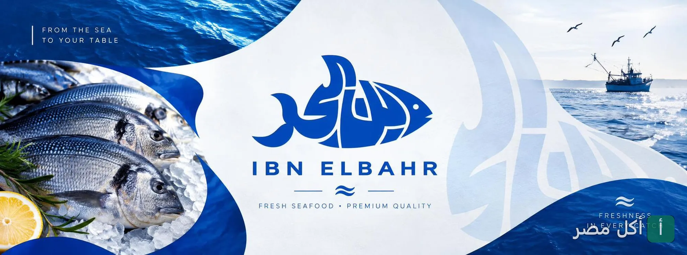

لوت
مقلي - مشوي - زيت وليمون - سنجاري
360 جنيه

الأسعار بالجنيه المصري من صفحة أكل مصر (آخر تحديث معلن: ١٩ أكتوبر ٢٠٢٦). أكد السعر مع المطعم عند الطلب.
الأصناف والأسعار من صفحة أكل مصر المنشورة. أكد تفاصيل طلبك والسعر مع المطعم عند الاتصال.